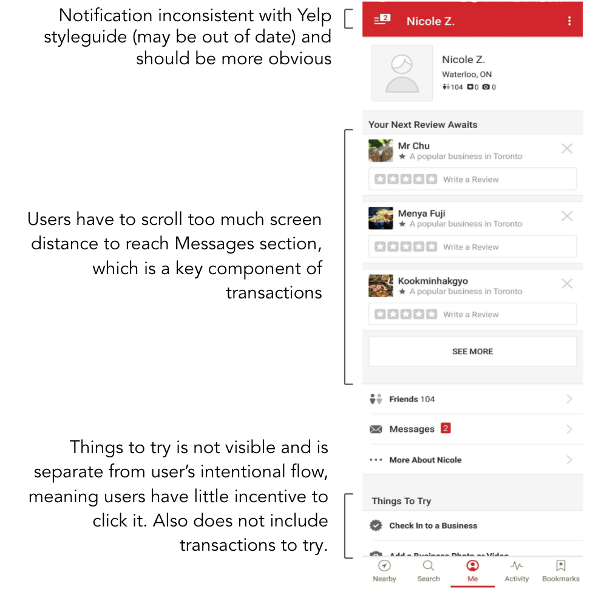

Yelp case study
Grow the number of transactions
Problem space
Breaking it down: What contributes to the number of transactions?
User analysis:
Transactions involve both the user and business owner:
- Users want to discover new ways of transactions that will make their lives easier/better
- Business owners’ want high ROI from moving their transactions onto Yelp
Possible pain points:
- Users don’t know about all the transaction options, why they should use them, or how they are used
- Business owners don’t see a high enough ROI without a large enough user base
Problem:
- How do we make Yelp the standard for conducting transactions?
- How do we give business owners a high ROI for choosing Yelp to conduct transactions?
Why is it worth solving?
As a product:
Users will have a better experience conducting end-to-end transactions on one platform, their flow will not be broken by having to switch to another platform or calling.
As a business:
Transaction revenue currently only makes up 8.3% of total revenue (3Q17).
Putting a focus on transactions with Request-A-Quote, Grubhub, and Yelp Reservations will help with diversifying the company’s revenue in its most profitable areas: home and local at 31% and restaurants at 15%.
Aligns with Yelp’s goal to power local businesses (according to Jed Nachman) by providing a large user base to conduct transactions, and making it easier to do so.
AIDA Analysis
The AIDA conversion funnel can be used to engage users and business owners at every stage from first contact to the decision to conduct a transaction. Start with an AIDA analysis to map out user journey and identify area of focus.
Solution: Notification center
What
A notification center built into the user’s profile, which will contain both their messages and new feature alerts, upcoming reservations, responses to quote requests, rewards received, etc.
Users are rewarded for their first use of the transaction or recommending it to a friend. The reward money is put on hold and can be redeemed through by using it for another feature on Yelp (e.g. ordering food).
Why
Start engaging users at the awareness stage: as Yelp expands, users need a way of finding out how Yelp can make their lives easier.
Users are incentivized to try new features to get rewards, then incentivized to use those rewards on transactions in other places.
Although the solution doesn’t focus on one type of transaction, it takes a more holistic approach of how users discover and user any type of transaction.
Targets threefold: onboarding users, retaining users, and making users more engaged
Audit of current flow to messages
New design objectives for notification center
Make messages easier to access for users, more obvious part of their flow
Notification center should focus on a creating a way of presenting notifications that is obvious to the user but does not disrupt their flow
Users should be able to distinguish their messages with businesses and feature notifications from Yelp, but notifications are not in a separate section/tab because users would have less incentive as it’s not part of their intentional flow
Design Mockups
Success Metrics
KPI
Increase in transaction revenue y-o-y (32.5% increase from 3Q15 to 3Q16 and 16.3% increase from 3Q16 to 3Q17)
Quantitative metrics
- Increase in number of first transactions to users ratio
- More local businesses using Yelp transaction platforms
- Higher ROI for business owners on the Yelp platform
Qualitative metrics
- Do users feel like they are in the know about new features and getting the most out of Yelp?
- Are we providing business owners with enough data to help them make an informed decision on whether they want Yelp’s transaction features integrated into their business — can they gauge their ROI
- Where do users get stuck and abandon the product, does this new feature disrupt user flow somewhere else?
Risk
May backfire and add friction in the user’s flow if they find discovering features to be unnecessary information that makes it harder to find their messages
Impact
From a user perspective:
- Engages users early on, creating a point of contact with transactions
- Users will know that they don’t have to switch out of the app to call to make a reservation, request a quote, etc., especially as more businesses become immersed with Yelp’s transactions platform.
- Reward system means that users are incentivized to use their rewards from transactions in one part Yelp on transactions in another part
From a business owner perspective:
- Successful adoption amongst users means increased ROI, which increases enticement for businesses to buy into conducting transactions on Yelp
- From there, the more businesses that have transactions integrated into their business page, users will be able to make transactions with more businesses without needing to navigate out
Increase in transactions = more profitable business